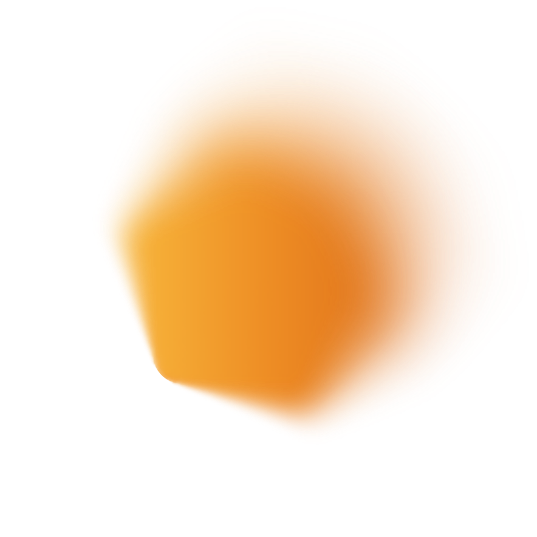
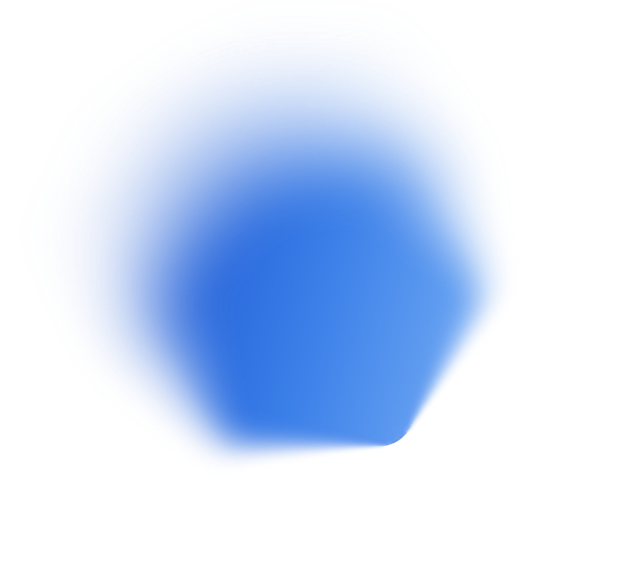
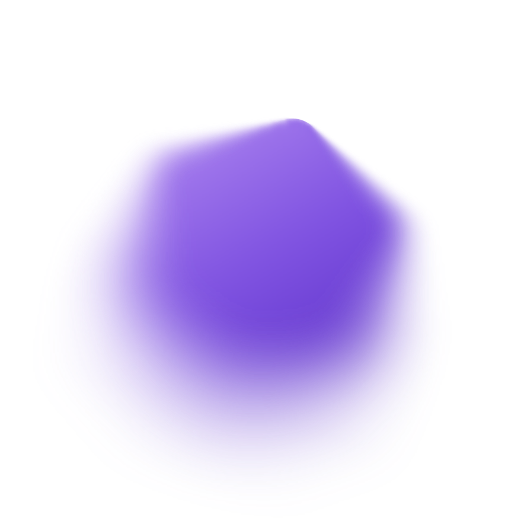
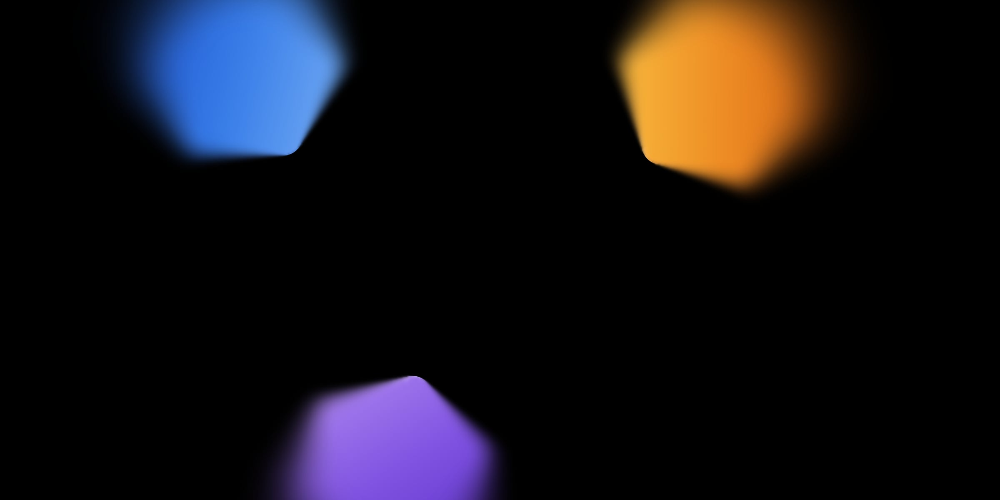
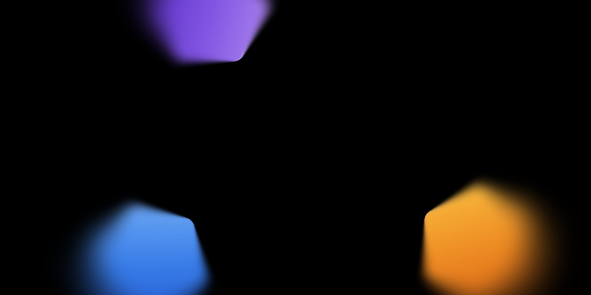
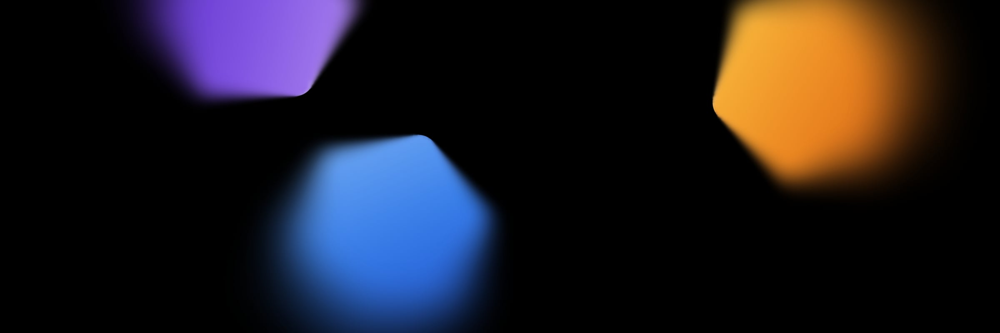

Logos, marks &
iconography
Every brand asset in the system, with how to use it. All live in assets/ —
reference them with a plain <img>, or pull from {RAW_BASE}/assets/… on demand.
Getting started
How to use
The rules that keep the brand intact across surfaces.
- Pick the black mark/logo for light surfaces, white for dark.
- Never recreate the wordmark in CSS text — always the SVG.
- The triangle Mark is the center of gravity: favicon → hero.
- Icons use
currentColor— recolor via CSScoloror a mask. - Category badges sit on their hex-blur glow.
- No emoji. If an icon is missing, fall back to Lucide and flag it.
Reference an asset
<!-- wordmark on a light header --> <img src="assets/GenLayer_Logo_Black.svg" alt="GenLayer" height="22"> <!-- recolor a currentColor icon --> <span class="ic" style="--src:url(assets/track-work.svg); color:var(--gl-sky)"></span>
Wordmark
Logos
The full GenLayer wordmark. Keep clear space; don't stretch or recolor.
Symbol
The Mark
The triangle / hexagon symbol — favicon, app icon, section anchor, 1080px hero.

UI icons
Icons
Thin-stroke, geometric. The first two use currentColor (shown recolored via mask).
Categories
Track icons
One per contribution track. currentColor — tint to match the category.
Recognition
Badges & hex-blur
Hexagonal node badges sit on their matching hex-blur glow texture.



Imagery
Backgrounds
Cool-toned, studio-lit hero photography. Use a bottom-up darkening gradient for legible type.


